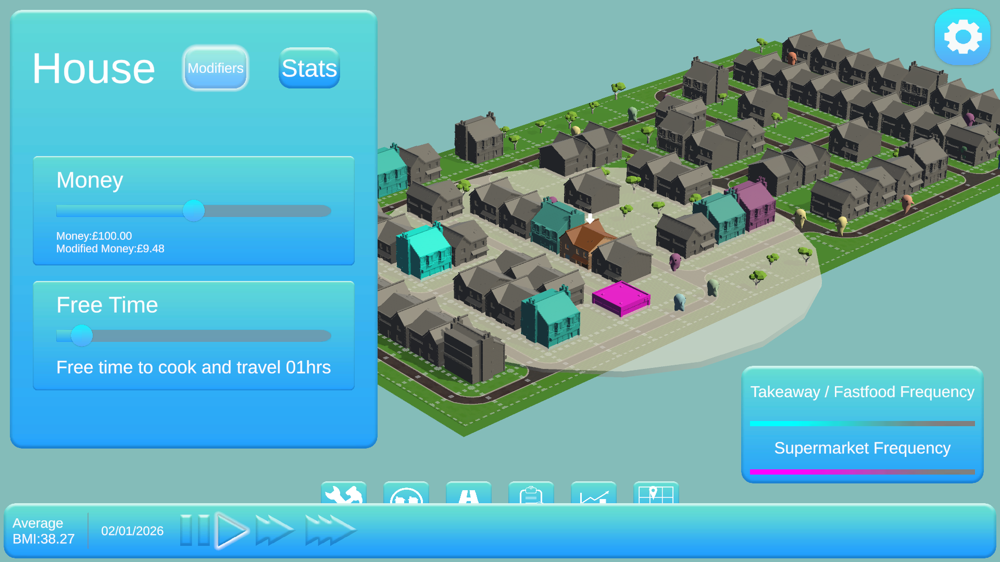

Nesta VHNC
Overview
The Project
In Ocotober of 2021 Nesta along with InGAME invited Scottish game makes and developers to utilise the potential of video games to address the obesity crisis by pitching and subsquently developing a virtual sandbox. As a part of Konglomerate Games I got to work on and help win this competition along with one other programmer and artist.
Due to the short time period and small team we all had our fair share of responsibilities. For the initial pitch stage it was important we worked together and were able to research the problem space, create, share and give feedback on ideas and contribute towards the initial pitch. Our research found that the biggest factors affecting obesity was poverty and free time. Our idea was a city builder focused around creating food environments to be able to model, and experiment with. This was to allow users to better understand the relationship between obesity and the environment people live within and experiment with solutions. After the initial pitches Konglomerate entered the 8 week rapid development final along with two other companies
My Role
During these 8 weeks I had to work and prototype various aspects of our proposed idea which was super exciting as I got to work on gameplay features I had never got to develop at this scale before such as (but not limited to):
City Building
At the core of our pitch was the ability to create neighbourhoods and cities so citybuilding was essential. As it was a rapid prototype the city building aspect wasn't super complex. The user could define the dimensions of the building grid and then build roads, houses, takeaways and super marketson the defined grid.
City Zoning
Many cities are split up in zones / boroughs. We wanted to be able to define these zones and see the stats as more improvrished areas are typically more obese. These zones could be painted onto and erased from the grid with any buildings already placed being added to the zone. Subsquent buildings placed within a zone would be also be added
Citywide, zone wide and building specific modifiers
Selecting a building or a zone would open up a menu with sliders. The building had the base stats depending on the building type. Homes displayed the income, free time that could be adjusted by the user to define the parameters. The stats of the inhabitants were also displayed so the user could see the age and weight of the inhabitants. Shops and takeaways allowed the user to see what was being sold in the stores and modify the calorie content and price of the items being sold.
Zones would allow you to apply modifiers to all the buildings within the zone. This was to allow you to see what would happen in a zone's average income increased by 10%, or if the price of food fell by 20%.
Additionally, there were also simulation wide policies that could be enacted that had values that could be tweaked such as subsidising households and banning promotions on specific food items.
Saving and loading custom data through serialisation
This was my first time implementing a save load system (beyond writing text to and from a document) and it was a great learning experience. Saving and loading were a vital part of the playbox as we wanted users to play with different solutions. Being able to test a scenario and then load up a previous date in a city and test a different set of parameters allowed users to do iterative testing and playing.
AI
The AI wasn't anything crazy complicated and definetely didn't model real life behaviours to an accurate degree but this wasn't expected from the brief.
The way it worked each day each household would evaluate the household's food stores. If there was food in it would cook and then consume the food in the house. If food stores were running low / empty the household would be forced to do a food shop. It would evaluate the distance (to calculate travel time) and cost of each shop and takeaway as a percent of the household's free time and income. The household would then randomly choose one of the options based on the weights. In lower income and lower freetime households the weighting would vastly impact their choices.
As a simplified example say a household had 10 money available and within it's range there was a food shop that cost 8 money, a food shop that cost 3 money and a takeaway that cost 4 money. The percentage cost of those options respectively would be 80%, 30%, and 40% the inverse of those percentages would be applied to the chances of choosing the respetice food source. If a household had 20 money however those percentages would drop to 40%, 15% ,and 20%. The difference in weights become less meaning the household now how has a much higher chance of picking the more expensive food soruce which typically would be healthier. The same idea was applied to free time and any percentages above 100% were discarded as they weren't feasable for the household.
The aim of this method was to try simulate the constraints on lower income households and how having more money and more freetime meant that these factors play less of a role in the selection of food sources. Then the food would be consumed by the household and the calories would be added to each of the inhabitants of the household. Then using the formula to calculate each inhabitants Basal Metabolic Rate we could simulate how many calories would be burned each day as well.
This approach obviously makes a lot of assumptions and simplifies the process of consuming food but as a basic model for a proof of concept within 8 weeks it was deemed sufficient.
Data visualisation
One of the core reasons Nesta aimed this pitch at game developers was due to the unique ways games can represent data visualisation. There were 2 main categories of data visualisation within the game. First was traditional 2D graphs which the user could play with. The user could choose the time frame, the frequency of data points: every day, every year, every 2 weeks etc. Additionally large milestones were also highlighted on graph such as when a policy was enacted or repealed.
The second was 3D visualisation in the way of heatmaps. I added a heatmap showing obesity density which was done using some simple shaders. Additionally clicking on a building would show it's relationship to other buildings such as which shops a house would visit most or which houses were visiting a takeout the most. This again was achieved using some simple shaders that I created.
UI
I was also responsible for building the UI and menus in the project which involved me implementing designs created by our artist in Figma.
VFX
We ended up being slightly ahead of schedule so I got some time to add some basic visual effects here and there. These consisted of UI tweening and a constructiong and destruction particle effect when placing and destroying buildings which I was super proud about.
Find out more about the project here!